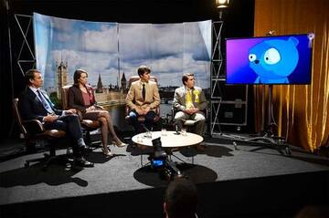

Sinopsis
Jamie (Daniel Rigby) un fracasado actor de comedia cuyo trabajo es poner la voz y el movimiento de un oso azul de dibujos animados llamado Waldo mientras realiza incisivas entrevistas a políticos y figuras relevantes. Jack (Jason Flemyng), el productor de televisión donde se emite el programa, decide presentar a Waldo como candidato a unas elecciones parlamentarias en curso para llamar la atención de público. Sin embargo la inicial broma toma proporciones inesperadas frente a los candidatos del partido laborista (Chloe Pirrie) y conservador (Tobias Menzies).